UCEC · RNA-seq: contagens brutas (GDC)
STAR - Counts (GENCODE v36) · gerado em 22/10/2026 05:47
25,3 Mtamanho mediano
0,63dispersão mediana α
17.574genes
546amostras tumorais
23amostras normais
0,0%valores faltantes
Fonte: API do GDC (STAR - Counts)
Principais resultados
- Bibliotecas de 5,1 a 68,2 milhões de leituras (mediana 25,3). 44.662 de 60.660 features têm leitura em pelo menos 10% das amostras.
- A variância cresce bem acima da média: a dispersão mediana da binomial negativa é α=0.63 (para features com média > 10). Isso descarta um modelo Poisson e indica binomial negativa (ou Poisson-lognormal) na verossimilhança.
- A fração de zeros é compatível com a binomial negativa (diferença mediana -3,8%); inflação de zeros não parece necessária.
- Em média 9,8% das leituras de cada amostra vão para as 20 features mais abundantes (MT-ND4, MT-CO1, MT-RNR2).
- Genes codificadores de proteína recebem 97,2% das leituras (mediana).
- 17.574 genes medidos em 569 amostras (546 tumorais e 23 normais); 0,0% dos valores estão faltando.
- Os dois primeiros componentes principais explicam 11,4% e 8,0% da variância das features mais variáveis.
- Correlação mediana entre amostras: 0,53.
- Amostras com correlação muito abaixo das demais (possíveis outliers técnicos): TCGA-AX-A3FZ-01, TCGA-E6-A1M0-11, TCGA-FI-A2CX-01.
- Tumor x normal: 12804 genes diferentes com FDR < 5% (6446 maiores no tumor, 6358 maiores no normal; 23 pacientes têm o par tumor-normal).
- Mais aumentados no tumor: ENSG00000130675.15, ENSG00000237978.6, ENSG00000164362.21, ENSG00000169548.3, ENSG00000243479.3, ENSG00000159263.16, ENSG00000135374.11, ENSG00000287407.1.
- Mais reduzidos no tumor: ENSG00000122176.12, ENSG00000263753.8, ENSG00000172817.4, ENSG00000147202.18, ENSG00000196653.12, ENSG00000197928.10, ENSG00000184719.12, ENSG00000184937.16.
- Associações clínicas com p < 0,05 nos componentes principais: PC1 com idade (p=1.5e-05); PC2 com idade (p=2.5e-05); PC3 com idade (p=1.9e-07); PC1 com sobrevida (p=9.2e-06); PC2 com sobrevida (p=0.00085).
Biblioteca
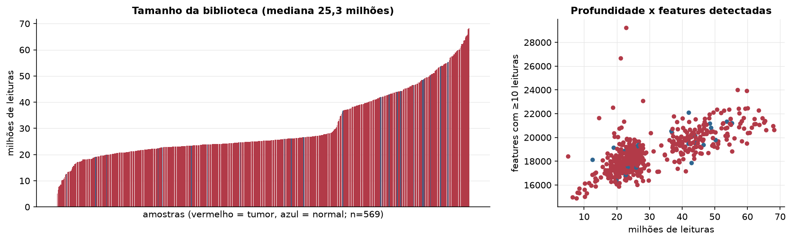
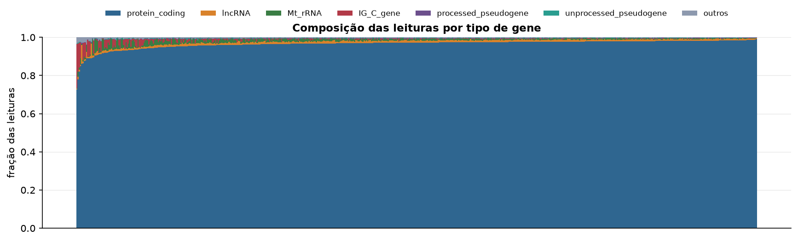
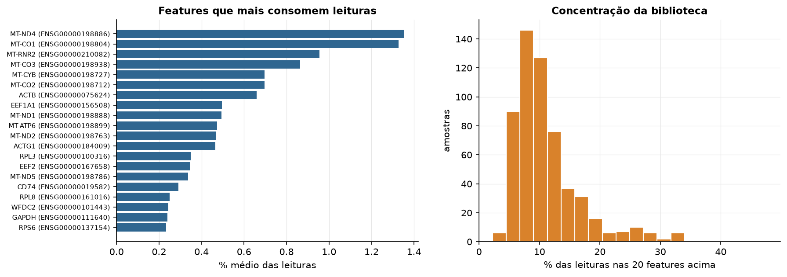
Sobredispersão e zeros
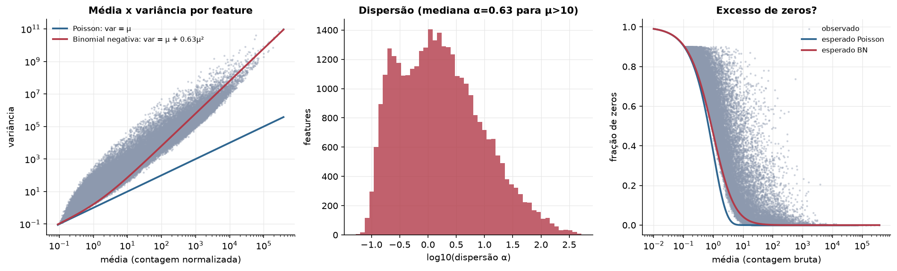
Exploração em log2(CPM+1)
Features com CPM ≥ 1 em pelo menos 20% das amostras (17.574 features).
Distribuição dos valores
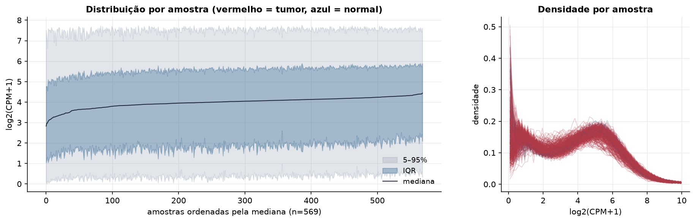
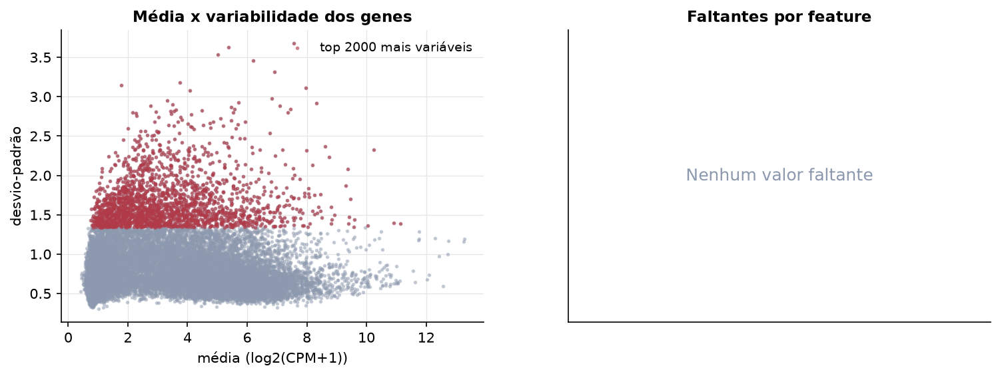
Estrutura das amostras
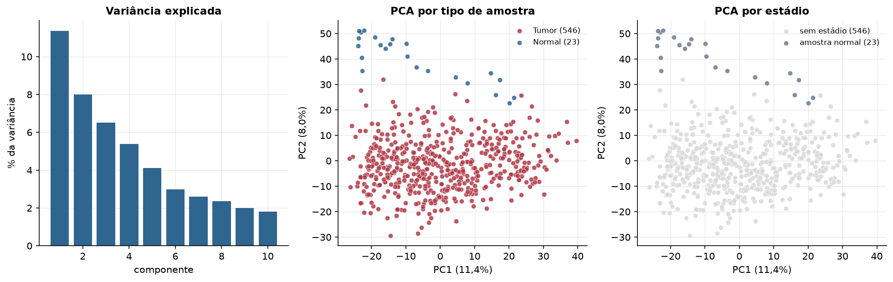
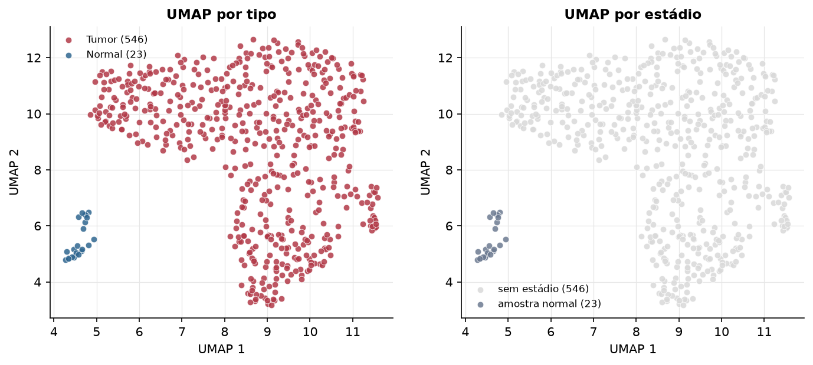
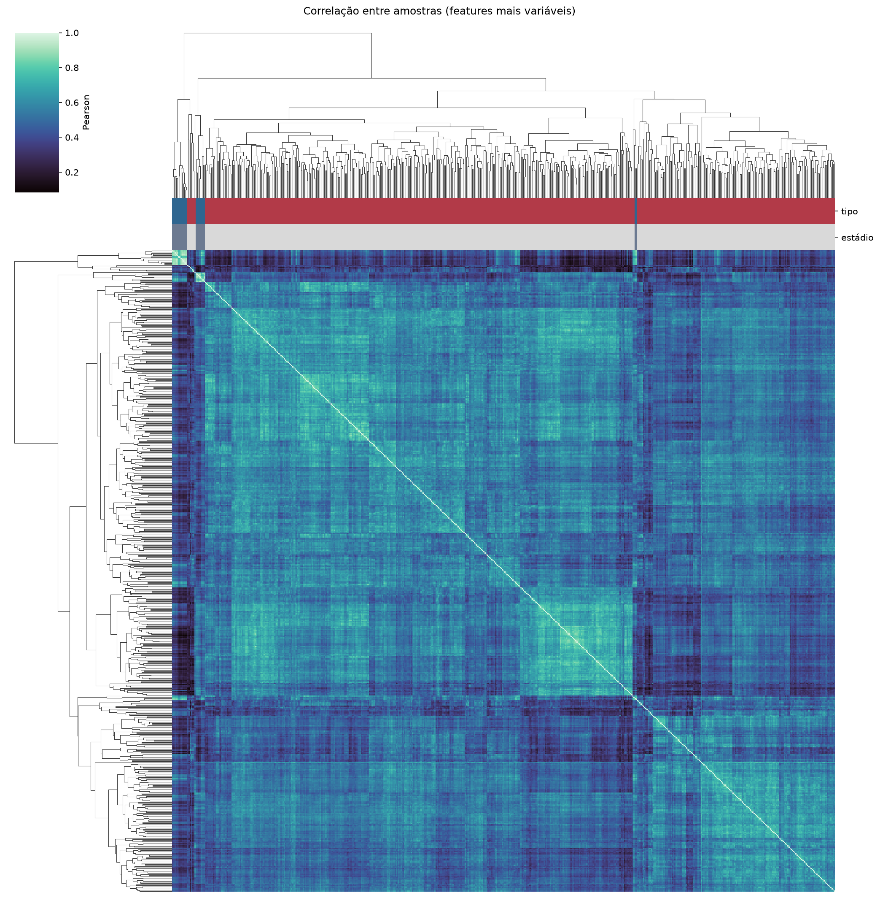
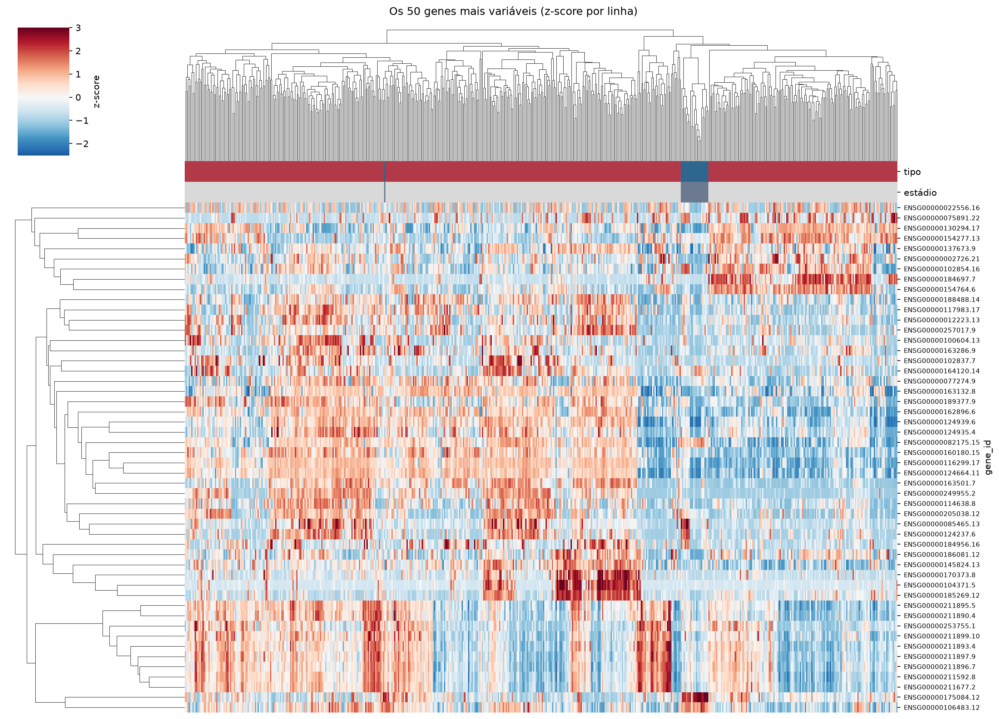
Tumor x normal
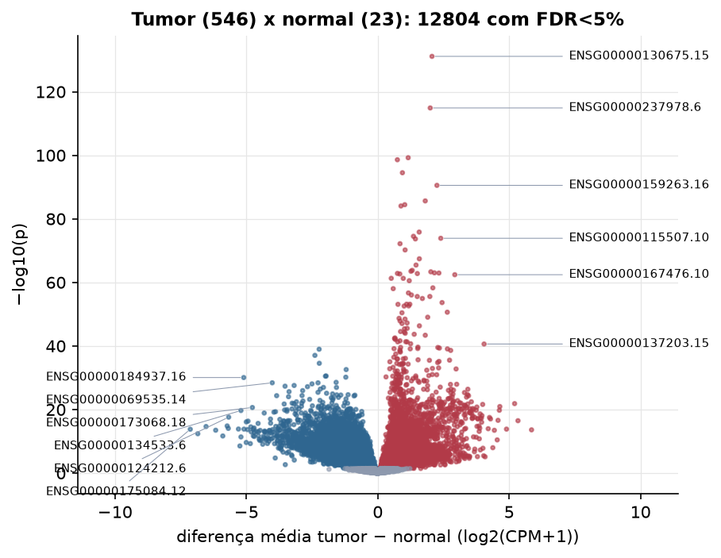
Features mais diferentes entre tumor e normal
| gene_id | diferenca_tumor_menos_normal | t | p | fdr |
|---|---|---|---|---|
| ENSG00000130675.15 | 2.064 | 33.41 | 7.38e-132 | 1.3e-127 |
| ENSG00000237978.6 | 1.996 | 36.904 | 1.26e-115 | 1.11e-111 |
| ENSG00000164362.21 | 1.158 | 27.262 | 5.8e-100 | 3.4e-96 |
| ENSG00000169548.3 | 0.746 | 26.121 | 2.52e-99 | 1.11e-95 |
| ENSG00000243479.3 | 0.938 | 25.328 | 3.11e-95 | 1.09e-91 |
| ENSG00000159263.16 | 2.251 | 27.391 | 2.9e-91 | 8.49e-88 |
| ENSG00000135374.11 | 1.807 | 24.145 | 2.26e-86 | 5.67e-83 |
| ENSG00000287407.1 | 1.027 | 23.399 | 3.54e-85 | 7.77e-82 |
| ENSG00000144045.14 | 0.883 | 23.674 | 8.9e-85 | 1.74e-81 |
| ENSG00000259439.2 | 1.577 | 21.732 | 1.45e-76 | 2.55e-73 |
| ENSG00000007372.24 | 1.359 | 22.404 | 3.11e-75 | 4.97e-72 |
| ENSG00000115507.10 | 2.398 | 37.106 | 1.31e-74 | 1.92e-71 |
| ENSG00000197587.11 | 1.433 | 21.312 | 2.07e-74 | 2.8e-71 |
| ENSG00000227440.1 | 0.848 | 27.551 | 6.64e-73 | 8.34e-70 |
| ENSG00000142700.12 | 1.04 | 20.641 | 6.1e-71 | 7.15e-68 |
| ENSG00000100078.4 | 1.582 | 28.299 | 3.68e-68 | 4.05e-65 |
| ENSG00000272763.1 | 1.456 | 21.472 | 3.49e-66 | 3.61e-63 |
| ENSG00000140519.14 | 1.312 | 19.725 | 1.63e-64 | 1.59e-61 |
| ENSG00000164093.17 | 1.265 | 19.508 | 3.17e-64 | 2.94e-61 |
| ENSG00000148798.11 | 2.02 | 24.622 | 4.67e-64 | 4.1e-61 |
| ENSG00000183145.9 | 2.156 | 27.342 | 9.89e-64 | 8.28e-61 |
| ENSG00000159184.8 | 2.326 | 24.352 | 1.13e-63 | 9.01e-61 |
| ENSG00000205667.3 | 0.749 | 24.183 | 1.49e-63 | 1.14e-60 |
| ENSG00000214039.9 | 1.506 | 20.337 | 1.64e-63 | 1.2e-60 |
| ENSG00000120659.15 | 0.839 | 19.604 | 2.2e-63 | 1.55e-60 |
| ENSG00000167476.10 | 2.932 | 28.757 | 3.78e-63 | 2.56e-60 |
| ENSG00000251026.2 | 0.514 | 18.872 | 5.24e-62 | 3.33e-59 |
| ENSG00000224817.2 | 0.971 | 18.871 | 5.31e-62 | 3.33e-59 |
| ENSG00000204610.13 | 1.199 | 20.325 | 2.92e-61 | 1.77e-58 |
| ENSG00000127423.11 | 2.096 | 38.993 | 5.22e-59 | 3.06e-56 |
Associação com variáveis clínicas
p-valores da associação dos três primeiros componentes principais (só tumores) com estádio (Kruskal-Wallis), sexo (Mann-Whitney), idade (Spearman) e sobrevida global (Cox univariado).
| estádio (Kruskal) | sexo (Mann-Whitney) | idade (Spearman) | sobrevida OS (Cox) | |
|---|---|---|---|---|
| PC1 (11,7%) | 1.54e-05 | 9.17e-06 | ||
| PC2 (6,8%) | 2.52e-05 | 0.000854 | ||
| PC3 (6,2%) | 1.89e-07 | 0.785 |